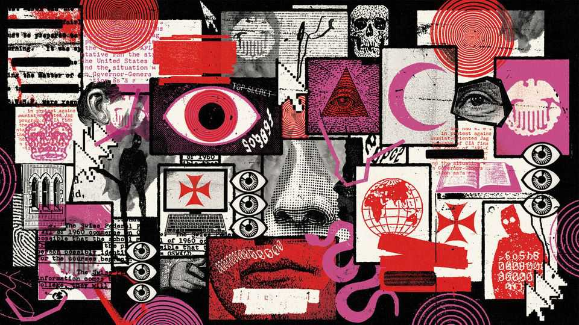

Why this is a golden age for conspiracy theories
They flourish during periods of social and political upheaval

Oct 29th 2026
John F. Kennedy junior died in a plane crash in 1999. Or did he? Some Americans insist he faked his death and is secretly working with Donald Trump to vanquish the “deep state”. In September heroic passengers and a wounded captain stopped a deranged co-pilot from flying a packed jet into Israel’s main airport. Or, online commentators suggest, they were all participants in a “false-flag operation” staged by Israel’s government.
Conspiracy theories are nothing new. Plenty of people have an uncle happy to argue after a few drinks that the moon landing was faked, or have walked past pamphleteers blaming some shadowy group for all the world’s ills. But never have so many spread so fast, so far and—with political leaders across the world eager to stoke conspiracy theories when it suits them—so high. To understand why, turn to three new books that show how conspiracy theories thrive at times of social upheaval.
Andrew McKenzie-McHarg, a historian, says two characteristics distinguish conspiracy theories from ordinary rumours or smears. First, they posit plots by the powerful. People spin conspiracy theories to explain secret forces shaping the world, not, say, why their dishwasher fails to clean between fork tines. And second, they refer “not just to a conspiracy but to a non-existent conspiracy”. Watergate and the Iran-contra affair, for instance, are infrequent subjects for theorising because they were actual conspiracies. (They were also exposed and punished.) By contrast, conspiracy theories focus on “hidden” plots.
The phrase “conspiracy theory” may have first appeared in the New York Times in 1863, in a letter rebutting the charge that Britain was “going out of her way to meddle with America” during the civil war. But the concept is much older. In the 14th century Jews were accused of spreading the Black Death by poisoning wells. Many Londoners said Catholics started the Great Fire of London in 1666. “The Protocols of the Elders of Zion”, first published in Russia in 1903, purported to reveal a Jewish plot for world domination. These theories emerged at times of social upheaval: wars, pandemics and the crumbling of the old imperial order. They provided simple explanations for complicated events—and a villain to blame.
Michael Taylor, another historian, explores the quintessential conspiracy theory of this type in his terrifically entertaining book, “Illuminati”. The Illuminati existed, but far from being an all-powerful group of string-pullers, they were a bunch of fissiparous nerds. The group was founded in Bavaria in 1776 to spread Enlightenment values. Were they a secret society? Yes, but secret societies flourished across Europe at that time. Did they want to reform and liberalise society? Yes, but there is nothing inherently sinister about that.
Bavaria’s authorities hounded the Illuminati out of existence after barely a decade, but the group lived on in the imagination. In 1797 a reactionary French priest called Augustin Barruel blamed thinkers including Voltaire and Denis Diderot for seeking to destroy Christianity with the help of Freemasons and the Illuminati. Revolutionary terror, he thundered, embodied “the black arts of Illuminism”. Like many conspiracy theorists, he spun a web of fantasy around a kernel of truth: the Illuminati really were a secret group opposed to religious repression. But that was a far cry from plotting to destroy Christianity.
In 1919, more than a century later, Nesta Webster revived Barruel’s theory. The English author wrote that the “diabolical methods employed by the Jacobins of France, indoctrinated by the Illuminati, have been repeated in Russia with terrible effect”. She added a nasty wrinkle: “a conspiracy of the Jewish race that began perhaps at Golgotha” had, in league with the Illuminati, inspired the French and Russian revolutions, the uprisings of 1848, the Paris Commune of 1871 and the rise of trade unionism. Nutty as that sounds, even Winston Churchill once called for “the schemes of the international Jews” to be exposed.
Even today, if you search “Illuminati” on any social-media platform, you will be faced with a deluge of lunacy, much of it antisemitic. In 2021 a poll of 25,000 people in 24 countries found that, on average, 37% believed “there is a single group of people who secretly control events and rule the world together”. Why do so many people buy such bunkum?
In “Conspiracy” Nicolas Guilhot, a French academic, writes that conspiracy theories “reflect a diffuse social malaise” and frustration with an “obsolescent variety of liberalism”. But disillusionment does not inevitably lead to delusion. Plenty of people agitate for political change by organising and voting, rather than posting about Democrats drinking children’s blood (the core of the QAnon conspiracy that raged during Mr Trump’s first term).
Mr Taylor suggests that people obsess over the Illuminati—or the Bilderberg Group, Freemasons, Jews or any other imagined conspirators often credited with superhuman powers of cunning and dominion—because they “have been unable or unwilling to accept that, sometimes, events are beyond the control of even the most competent actors”.
Revolutions, wars, pandemics and economic crises happen for complex reasons; many find it easier and more comforting to believe in a planned reality rather than one largely driven by chance and contingency. Small wonder that, as the post-war political order breaks down, people are again finding solace in conspiracy theories. Or maybe that’s just what the lizard people want you to think. ■